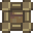

Stone Walkway Floor
Jump to navigation
Jump to search
| Stone Walkway Floor | |
|  | |
| Place on the ground to create paths or to decorate your floors. | |
| Information | |
| Source | Crafting |
| Sell Price | |
| Crafting | |
| Recipe Source | Carpenter's Shop for |
| Ingredients | |
The Stone Walkway Floor is a crafted decor item. It is used to create decorative paths on the farm. It can be displaced by lightning.
The Stone Walkway Floor recipe is sold at the Carpenter's Shop for  200g.
200g.
All types of flooring provide a +0.1 boost to Player Speed, but only if the flooring is located outside on The Farm. They also have the indirect benefit of preventing Grass or Trees from growing in heavily used areas, which would otherwise slow down or obstruct movement.
Gifting
| Villager Reactions
| |
|---|---|
| Dislike | |
Gallery
Images showing how it appears when placed:
Spring, Summer, Fall, & Winter
History
- 1.5: Introduced.
| Decor | |
|---|---|
| Floors | Brick Floor • Crystal Floor • Rustic Plank Floor • Stone Floor • Stone Walkway Floor • Straw Floor • Weathered Floor • Wood Floor |
| Paths | Cobblestone Path • Crystal Path • Gravel Path • Stepping Stone Path • Wood Path |